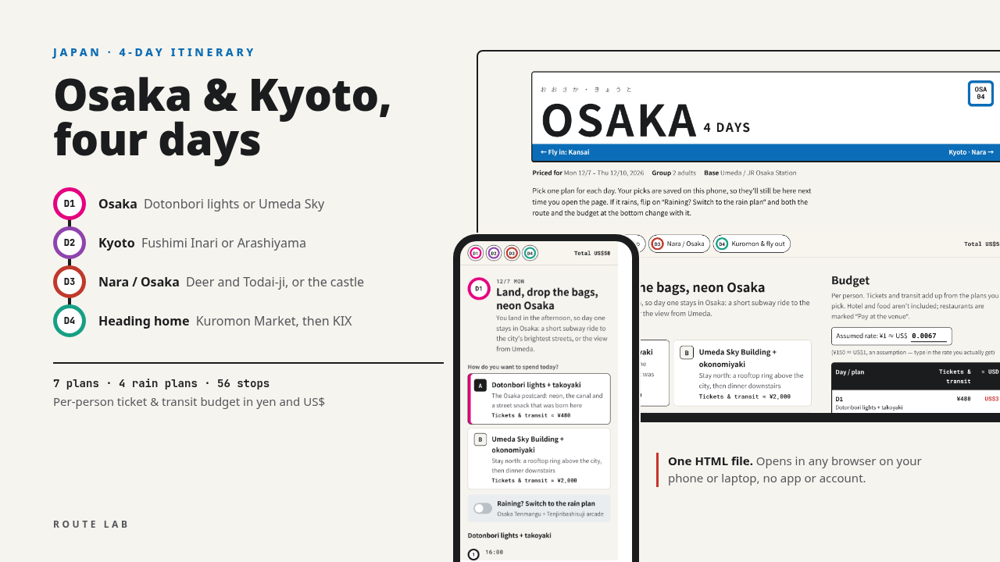

4-DAY ITINERARY · KANSAI, JAPAN
One hotel in Umeda for all four nights. Osaka's neon on the first evening, Kyoto and Nara as day trips on direct trains, and Kuromon Market on the way to Kansai Airport.
Below is a free outline of the itinerary: where each day goes, what to book, and what it costs. The download adds the stop-by-stop times, a Google Maps link and a checked price for every stop, and a budget that adds itself up as you pick.

Each day has two or three plans to choose from and an indoor plan for bad weather. These are the neighbourhoods and the main stops; the times and the order are in the download.
Dotonbori and the Glico sign from Ebisu Bridge, takoyaki at the original Wanaka in Sennichimae, and the stone lane of Hozenji Yokocho. Or stay north: the open-air Floating Garden on the Umeda Sky Building and okonomiyaki in the retro food street downstairs.
Rain plan: Tenjinbashisuji, Japan's longest covered shopping street, and Osaka Tenmangu
Fushimi Inari's torii tunnels first thing, Kiyomizu-dera, a yudofu lunch on the temple approach, the stepped lanes of Sannenzaka and Ninenzaka, then Yasaka Shrine and Gion. Or west Kyoto: Tenryu-ji's garden, the bamboo grove, matcha at Okochi Sanso and Togetsukyo Bridge.
Rain plan: Sanjusangendo's 1,001 statues and Nishiki Market
Nara Park and its deer, Todai-ji's Great Buddha hall, the lanterns of Kasuga Taisha and the merchant lanes of Naramachi. If you'd rather stay put: Osaka Castle's main tower, Tsutenkaku and kushikatsu in Shinsekai.
Rain plan: Harukas 300, the glass-walled observatory at Tennoji
Grilled scallops and fruit at Kuromon Market, then the knives, pans and plastic food of Doguyasuji, back to Osaka Station for the bags.
Rain plan: Hankyu Umeda's basement food hall, next to the station
Things that change how you plan the trip, from the research behind the itinerary.
Per person, from the prices on the itinerary. The ranges depend on which plan you pick each day; the download has every line.
| Item | Per person |
|---|---|
| JR Kansai Airport Rapid, both ways (estimate) | ¥2,360 |
| Day 1, Osaka evening | ¥480 – ¥2,000 |
| Day 2, Kyoto (trains plus temple tickets) | ¥1,990 – ¥2,870 |
| Day 3, Nara or Osaka | ¥3,280 – ¥3,380 |
| Day 4, Kuromon | ¥480 |
| Total | ¥8,590 – ¥11,090about US$58 – 74 |
Tickets and transit only. With the default plans it's ¥8,690 (about US$58) per person; hotel and food aren't included. Prices were checked in October 2026 and can change; confirm before you go.
Kyoto is about 30 minutes from Osaka Station on the JR Special Rapid, Nara about 50 minutes on the Yamatoji Rapid, and Kansai Airport about 70 minutes on the Kansai Airport Rapid. None of them needs a change.
That means one check-in, no luggage on day trips, and Kyoto evenings that end on a direct train rather than a hotel move.
One HTML file for your phone or laptop. No app, no account. It doesn't book anything.
US$10 on Gumroad, with a refund within 14 days if the file is broken or won't open.
This itinerary is also in the Trip Page Bundle (US$29): Tokyo, Osaka & Kyoto, Hokkaido and Tainan plus the group trip template.